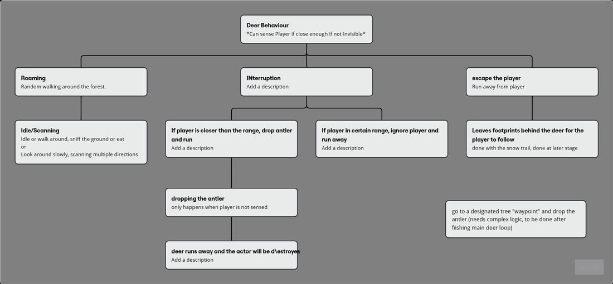

System Design
The behavior flowchart

drag to pan · scroll to zoomThe deer was designed around layered states — roaming, idle/scanning, interrupted, and escape. When a player entered range the deer would drop an antler at a designated waypoint tree, leave footprints in the snow, and run.
Neck tracking — deer head follows the player using procedural rotation
Deer detects player and runs — interrupted state triggering escape logic
Where It Broke
The failure
The behavior tree was ticking every frame. This caused the AI Perception to re-evaluate constantly, making the interrupted state jitter — the deer would oscillate between running and returning to roam because the random escape location was being regenerated too frequently, often placing the new target right next to the player. The debug complexity stacked up faster than the sprint allowed, and the system was cut.
What I'd do differently
The fix is straightforward in hindsight: set the behavior tree tick interval to 0.5 seconds instead of every frame. This reduces the AI Perception evaluation rate, eliminates the jitter, and gives the escape location enough time to resolve before re-evaluation. A single parameter change would have saved the whole system.
Reflection
What this taught me
The neck tracking worked. The state logic was sound. The system failed because of a performance configuration I didn't know to look for — not because the design was wrong. I've kept this page because documenting what you didn't fix, and why, is more honest than pretending everything shipped clean.
Research Question
How should NPC behavior tree evaluation frequency be scoped relative to perception systems — and what debugging patterns help surface tick-rate issues before they compound?